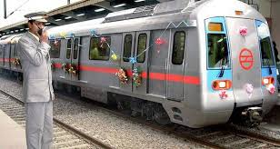
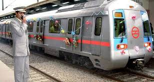
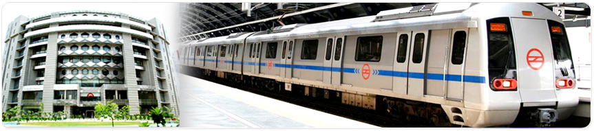

About Delhi Metro
The delhi metro has been instrumental in growing a new era of mass urban transportation. The modern metro system has introduced comfortable,air-conditioned and eco-friendly services for the last 15 years and its range is growing every year. The metro route has a massive 252km range with 185 stations.The DMRC opened it's first link between Shahdara and Tis Hazari.The network has now crossed boundaries in Delhi and now has reached NOIDA and Gurgaon.Apart from providing Delhites with a comfortable public transport option, the Delhi Metro is also contributing significantly towards controlling pollution as well as reducing vehicular congestion on the roads.According to a study, Delhi Metro has helped in removing about seven lakh vehicles from the streets of Delhi.